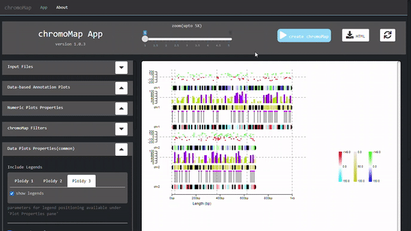

Introducing chromoMap App

a graphical user-interface for chromoMap.
-
A containerized web application,
developed using R Shiny*
framework, that can
be run locally on your computer. -
available at

Set up and install chromoMap App on your computer in a few steps…
Step 1: Install chromoMap App from Docker
You need to install Docker before you can install the chromoMap App. Docker is available for all platforms. Once Docker is installed, open your command prompt and get the chromoMap App using the following commands.
Step 2: Run the chromoMap App
You can run the chromoMap App by typing following command on command prompt.
the port number ‘4596’ that is used above is arbitrary, you can choose any number. In fact, if the command gives error message of ‘port is unavailable’ , you must change it any other port number.
If the command is successful, the App is running and can be accessed from any web browser by connecting at the above used port at localhost.
Open your browser and type the following in address bar (make sure to change your port number, if you had changed before)
and voila! the App is running.
Step 3: close the App
The App will be running as long as container is running. The App is not closed when you close the browser window. You can access anytime by again visiting the same address where the App is hosted. However, in order to kill the App, you need to kill the container that is hosting the App.
Firstly, check the running containers by typing:
You need to use the container ID to close the container. It is listed as first column. Now, run the following command to kill the container.
Copyright 2021. Lakshay Anand